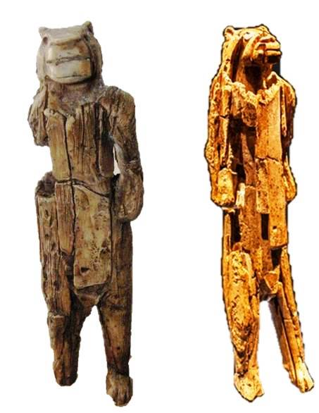
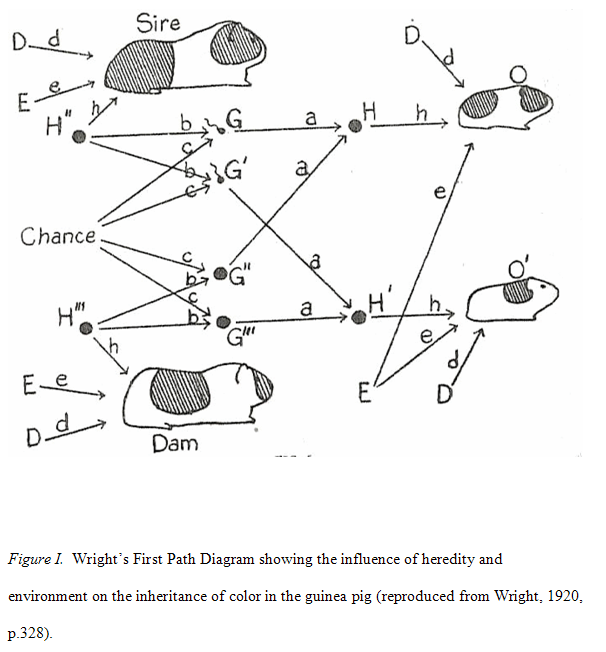

Causality
The Book of Why
The goal is to relate that to current NN models that do not interact with the world.
An agent can observe the result of its actions in the world and learn simple causality. It can also observe the results of actions of other agents.
1. The Ladder of causation
Ladder of causation
First, very early in our evolution, we humans realized that the world is not made up only of dry facts(what we might call data today); rather these facts are glue together by an intricate web of cause-effect relationships.
Second, causal explanations, not dry facts, make up the bulk of our knowledge, and should be the cornerstone of machine intelligence.

The goal of strong AI is to produce machines with humanlike intelligence, able to converse with and guide humans. Deep Learning has instead given us machines with truly impressive abilities but no intelligence. The difference is profound and lies in the absence of a model of reality.
The lack of flexibility and adaptability is inevitable in any system that works at the first level of the ladder of causation
A sufficiently strong and accurate causal model can allow us to use rung-one (observational) data to answer rung-two (interventional) queries
Cognitive revolution

The Lion Man is a 40k year old sculpture. Is different from previous art because is a creature of previous imagination. Within 10k years after the Lion Man's creation all other hominids had become extinct.
Humans evolved from apelike ancestors over a period of 6 million years. But in roughly the last 50k years something unique happened, which some call the Cognitive Revolution. Humans acquired the ability to modify their environment and their own abilities at a dramatically faster rate.
Their newly acquired causal imagination enabled them to do many things more efficiently through a tricky process called "planning".
Probability
Decades' worth of experience with these kinds of questions has convinced me that, in both a cognitive and a philosophical sense, the idea of causes and effects is much more fundamental than the idea of probability. We begin learning causes and effects before we understand language and before we know any mathematics.
Probabilities, as given by expressions like , lie on the first rung of the Ladder of Causation and cannot ever (by themselves) answer queries on the second or third rung.
While probabilities encode our beliefs about a static world, causality tells us whether and how probabilities change when the world changes, be it by intervention or by act of imagination.
2. From Buccaneers to Guinea Pigs
This chapter tells the history of how the dominant school of thought in statistics banned causality from science and instead advocated for correlation. It's interesting to see the influence of eminent statisticians. It also tells how Wright battled with them with his path analysis technique.
Regression to the mean
Many events are influenced by luck. Success is one of them, thus when events are repeated is unlikely to achieve and extraordinary good result.
History of Pearson and his preference for correlation over causation
Guinea pigs

You cannot draw causal conclusions without some causal hypotheses.This echoes what we concluded in Chapter 1: you cannot answer a question on rung two of the ladder of causation using only data collected from rung one.
3. From Evidence to Causes: Reverend Bayes meets Mr Holmes
Bayes theorem
Bayer theorem shows that you can deduce the probability of a cause from an effect. If we know the cause it is easy to estimate the probability of the effect, which is a forward probability. Going the other direction is harder.
For example if we have covid then we know the probability of having a positive result in a covid test (simply look at the FNR of the test). However computing the probability of having covid given that we know that the result of the test is positive is not straightforward.
We can estimate the conditional probability directly in one direction, for which our judgment is more reliable, and use mathematics to derive the conditional probability in the other direction, for which our judgment is rather hazy.
With that equation we can compute the probability of having covid given that the result of the test was positive.
There is an interesting example of mammogram test to check for breast cancer.
Bayes theorem allows to update our prior belief about something using new information. The likelihood ratio modifies the initial belief.
Then there is a tiny glimpse at bayesian networks
I felt convinced that any artificial intelligence would have to model itself on what we know about human neural information processing and that machine reasoning under uncertainty would have to be constructed with a similar message passing architecture. But what are the messages? This took me quite a few months to figure out. I finally realize that the messages were conditional probabilities in one direction and likelihood ratios in the other.
Bayesian networks
A bayesian network carries no assumption that the arrow has a causal meaning. The arrow merely signifies that we know the "forward" probability. Baye's rule tells us how to reverse the procedure, specifically by multiplying the prior probability by a likelihood ratio.
| Pattern | Model |
|---|---|
| Chain | |
| Fork | |
| Collider |
Chain junction. In science one often thinks of B as the mechanism, or mediator that transmits the effect of A to C. A familiar example is Fire Smoke Alarm
Fork junction. B is often called a confounder of A and C. The confounder will make A and C statistically correlated even thought there is no direct causal link between them. A good example is Shoe Size Age of child Reading ability
We can eliminate this spurious correlation by conditioning on the child's age. If we look only at seven-years-olds we expect to see no relationship between shoe size and reading ability
Collider junction. Talent Celebrity Beauty. Here we are asserting that both talent and beauty contribute to an actor's success, but beauty and talent are completely unrelated to one another in the general population.
In this case if we condition on B we will see a negative correlation between A and B. If we look only at famous actors finding out that a celebrity is unattractive increases our belief that he is talented.
The diagram describes the relation of the variables in a qualitative way, but if ou want quantitative answers you also need quantitative inputs.
By depicting A as a root noted we do not really mean that A has no prior causes. We really mean that any prior causes of A can be adequately summarized in the prior probability.
A bayesian network is integrative, which means that it reacts as a whole to any new information
From Bayesian networks to causal diagrams
Bayesian networks hold the key that enables causal diagrams to interface with data. All the probabilistic properties and the belief propagation algorithms remain valid in causal diagrams.
In a causal diagram the direction of the arrows implies causality whereas on the bayesian networks it only implies the forward probability.
Causal assumptions cannot be invented at our whim, they are subject to the scrutiny of data and can be falsified (probed that they are wrong)
However the graphical properties of the diagram dictate which causal models can be distinguished by data and which will forever remain indistinguishable, no matter how large the data. For example we cannot distinguish the fork from the chain by data alone because with C listening to B only, the two imply the same independence conditions.
This is very interesting because it says that data is not enough to create a causal diagram. We need to make hypothesis about the causal model.
Whereas a Bayesian network can only tell us how likely one event is given that we observed another, causal diagrams can answer interventional and counterfactual questions.
4. Confounding and deconfounding: Or, Slaying the Lurking Variable
We compare a group of people who get the treatment with a group of similar people who don't.
Confounding bias occurs when a variable influences both who is selected for the treatment and the outcome of the experiment
If the confounding variable Z is age, we compare the treatment and control groups in every age group separately. We can then take an average of the effects, weighting each age group according to its percentage in the target population. This method of compensation is familiar to all staticians; it is called "adjusting for Z" or "controlling for Z"
Although confounding has a long history in all areas of science, the recognition that the problem requires causal, not statistical, solutions is very recent.
Randomized controlled trial
A randomized controlled trial (or randomized control trial; RCT) is a form of scientific experiment used to control factors not under direct experimental control. Participants who enroll in RCTs differ from one another in known and unknown ways that can influence study outcomes, and yet cannot be directly controlled. By randomly allocating participants among compared treatments, an RCT enables statistical control over these influences. Provided it is designed well, conducted properly, and enrolls enough participants, an RCT may achieve sufficient control over these confounding factors to deliver a useful comparison of the treatments studied.
The one circumstance under which scientist will abandon some of their resistance to talk about causality is when they have conducted a randomized controlled trial
Around 1923 Fisher began to realize that the only experimental design that the nature genie could not defeat was a random one
Fisher realized that an uncertain answer to the right question is much better than a highly certain answer to the wrong question
Randomization brings two benefits: First it eliminates the confounder bias (it asks Nature the right question). Second it enables the researcher to quantify his uncertainty.
If you know what all the confounders are you can measure and adjust for them. However with randomization has the advantage of eliminating unknown confounders or confounders that we cannot control
All things being equal RTC are still preferred to observational studies, just as safety nets are recommended for tightrope walkers. But in some cases intervention may not be possible.
Confounding
Confounding should be simply defined as anything that leads to a discrepancy between the two
Back-door criterion
To deconfound two variables X and Y, we only need to to block every noncausal path between them without blocking or perturbing the causal paths. More precisely a back-door path is any path from X to Y that starts with an arrow pointing into X. X and Y will be deconfounded if we block every back-door path. If we do this by controlling for some set of variables Z, we also need to make sure that no member of Z is a descendant of X on a causal path.
This are the rules to stop the flow of information throught any individual junction:
- In a chain junction controlling for B prevents information about A from getting to C or viceversa
- In a fork junction controlling for B prevents information about A from getting to C or viceversa
- In a collider the variables A and C start out independent, but if you control for B information starts flowing.
- Controlling for descendants of a variable is like partially controlling for the variable itself
I consider the complete solution of the confounding problem one of the main highlights of the causal revolution
5. The smoke-filled debate: clearing the air
The problem of verifying that smoking caused cancer
one of the most important scientific arguments against the smoking-cancer hypothesis was the possible existence of unmeasured factors that cause both craving for nicotine and lung cancer.
some of the greatest milestones in medical history dealt with identifying causative agents. In the mid-1700s, James Lind had discovered that citrus fruits could prevent scurvy, and in the mid-1800s, John Snow had figured out that water contaminated with fecal matter caused cholera.
These brilliant pieces of detective work had in common a fortunate one-to-one relation between cause and effect.
The smoking-cancer debate challenged this monolithic concept of causation. Many people smoke their whole lives and never get lung cancer. Conversely, some people get lung cancer without ever lighting up a cigarette.
statisticians already knew of one excellent way to establish causation in a more general sense: the randomized controlled trial (RCT). But such a study would be neither feasible nor ethical in the case of smoking.
How they arrived to a conclusion
He propose to compare patients who had already been diagnosed with cancer to a control group of healthy volunteers. The type of study Doll and Hill conducted is now called a case-control study because it compares “cases” (people with a disease) to controls. It is clearly an improvement over time series data, because researchers can control for confounders like age, sex, and exposure to environmental pollutants. This case-control design has the drawback of being retrospective: it tell us the probability that a cancer patient is a smoker instead of the probability that a smoker will get cancer.
Instead of drawing inferences by assuming the absence of certain causal relationships in the model, the analyst challenges such assumptions and evaluates how strong alternative relationships must be in order to explain the observed data. This technique is called today "sensitivity analysis"
To judge or evaluate the causal significance of the association between the attribute or agent and the disease, or effect upon health, a number of criteria must be utilized, no one of which is an all-sufficient basis for judgment.” The committee listed five such criteria: consistency (many studies, in different populations, show similar results); strength of association (including the dose-response effect: more smoking is associated with a higher risk); specificity of the association (a particular agent should have a particular effect and not a long litany of effects); temporal relationship (the effect should follow the cause); and coherence (biological plausibility and consistency with other types of evidence such as laboratory experiments and time series).
Viewed from the perspective of causality, the report was at best a modest success. It clearly established the gravity of causal questions and that data alone could not answer them. But as a roadmap for future discovery, its guidelines were uncertain and flimsy.
Cornfield’s inequality, which planted the seeds of sensitivity analysis, was a step in that direction.
Paradox of smoking on newborns
By looking only at babies with low birth weight, we are conditioning on that collider. This opens up a back-door path between Smoking and Mortality that goes Smoking → Birth Weight ← Birth Defect → Mortality. This path is noncausal because one of the arrows goes the wrong way.
6. Paradoxes galore!
This chapter is a collection of different paradoxes. It makes emphasis in the fact that data generation or selection process can cause correlations to appear:
- Monty Hall problem
- Simpson paradox
- Berkson's paradox
- Lord's paradox
7. Beyond Adjustment: The Conquest of Mount Intervention
In this chapter we finally make our bold ascent onto the second level of the Ladder of Causation, the level of intervention—the holy grail of causal thinking from antiquity to the present day. This level is involved in the struggle to predict the effects of actions and policies that haven’t been tried yet, ranging from medical treatments to social programs, from economic policies to personal choices.
Back door adjustment formula
- Linear approximation
- Regression coefficients
For many researchers, the most (perhaps only) familiar method of predicting the effect of an intervention is to “control” for confounders using the adjustment formula. This is the method to use if you are confident that you have data on a sufficient set of variables (called deconfounders) to block all the back-door paths between the intervention and the outcome. To do this, we measure the average causal effect of an intervention by first estimating its effect at each “level,” or stratum, of the deconfounder. We then compute a weighted average of those strata, where each stratum is weighted according to its prevalence in the population. If, for example, the deconfounder is gender, we first estimate the causal effect for males and females. Then we average the two, if the population is (as usual) half male and half female.
In short, sometimes a regression coefficient represents a causal effect, and sometimes it does not—and you can’t rely on the data alone to tell you the difference. Two additional ingredients are required to endow rYX.Z with causal legitimacy. First, the path diagram should represent a plausible picture of reality, and second, the adjusted variable(s) Z should satisfy the back-door criterion.
Keep in mind also that the regression-based adjustment works only for linear models, which involve a major modeling assumption.
The back-door criterion tells us which sets of variables we can use to deconfound our data. The adjustment formula actually does the deconfounding.
adjustment does not work at all if there is a back-door path we cannot block because we don’t have the requisite data.
Front door adjustment
- Mediating variables
Instead of going in the back door, we can go in the front door! In this case, the front door is the direct causal path Smoking → Tar → Cancer, for which we do have data on all three variables. Intuitively, the reasoning is as follows. First, we can estimate the average causal effect of Smoking on Tar, because there is no unblocked back-door path from Smoking to Tar, Likewise, the diagram allows us to estimate the average causal effect of Tar on Cancer. To do this we can block the back-door path from Tar to Cancer, Tar ← Smoking ← Smoking Gene → Cancer, by adjusting for Smoking. Now we know the average increase in the likelihood of tar deposits due to smoking and the average increase of cancer due to tar deposits. We can combine these to obtain the average increase in cancer due to smoking.
Anytime the causal effect of X on Y is confounded by one set of variables (C) and mediated by another (M) (see Figure 7.2), and, furthermore, the mediating variables are shielded from the effects of C, then you can estimate X’s effect from observational data.
Glynn and Kashin’s results show why the front-door adjustment is such a powerful tool: it allows us to control for confounders that we cannot observe (like Motivation), including those that we can’t even name. RCTs are considered the “gold standard” of causal effect estimation for exactly the same reason.
Do-calculus
- 3 rules of do calculus
In both the front- and back-door adjustment formulas, the ultimate goal is to calculate the effect of an intervention, P(Y | do(X)), in terms of data such as P(Y | X, A, B, Z, …) that do not involve a do-operator. If we are completely successful at eliminating the do’s, then we can use observational data to estimate the causal effect, allowing us to leap from rung one to rung two of the Ladder of Causation.
our central question of when a model can replace an experiment, or when a “do” quantity can be reduced to a “see” quantity. Inspired by the ancient Greek geometers, we want to reduce the problem to symbol manipulation and in this way wrest causality from Mount Olympus and make it available to the average researcher.
Rule 1 says when we observe a variable W that is irrelevant to Y (possibly conditional on other variables Z), then the probability distribution of Y will not change.
Rule 2. We know that if a set Z of variables blocks all back-door paths from X to Y, then conditional on Z, do(X) is equivalent to see(X). We can, therefore, write
Rule 3 is quite simple: it essentially says that we can remove do(X) from P(Y | do(X)) in any case where there are no causal paths from X to Y. That is, if we do something that does not affect Y, then the probability distribution of Y will not change.
Let's write the rules of do-calculus in mathematical format:
- if is irrelevant to .
- if blocks all back-door paths from to .
- if does not affect .
Both groups independently and simultaneously proved that Rules 1 to 3 suffice to get out of any do-labyrinth that has an exit.
It tells us that if we cannot find a way to estimate P(Y | do(X)) from Rules 1 to 3, then a solution does not exist. In that case, we know that there is no alternative to conducting a randomized controlled trial.
Tapestry of science
Talks about the people that help develop the science of causality.
Good and bad cholesterol
Sometimes in RTC we also have to use do-calculus because people do not follow the treatment.
8. Conterfactuals: mining worlds that could have been
From Thucydides and Abraham to Hume and Lewis
Review of conterfactual through history. An earthquake that caused a tsunami told by Thucdydides, the destruction of Sodoma and Gomorra if there are not enough rightfull men. And then talks about the definition of causation using conterfactuals.
Potential outcomes, structural equations, and the algorithmization of conterfactuals
Again more histories about Fisher and the struggle between statistics and causation.
Then explains the problem of estimating the salary of one person given the education and experience. The conclusion is that we need to use a causal model to estimate the effect. We can test a causal model to see if the independence relations hold.
The virtue of seeing your assumptions
In this chapter it explains another method, I don't see the value because it is very confusing compared to the simple diagrams.
Conterfactuals and the law
It talks about sufficient and necessary causes. For example in a firing squad either of the soldiers is sufficient to cause the prisoner's death, and neither (in itself) is necessary.
Necessary causes, sufficient causes and climate change
Fraction of attributable risk (FAR) to quantify the effect of climate change. The FAR requires us to know two numbers: p0, the probability of a heat wave like the 2003 heat wave before climate change, and p1 the probabililty after climate change. For examplme if the probability doubles, then we can say that half of the risk is due to climate change.
A world of conterfactuals
9. Mediation: The search for a mechanism
Scurvy: the wrong mediator
It telss the story of scurvy and how it was discovered in 1800 that eating citrus fruit prevented scurvy. However the mediation mechanism was not understood and that caused that 100 years later some expeditions suffered from scurvy because they started to believe that the problem was related to bad meat. In the early 1900s it was discovered that vitamine C that was present on citrus fruit was the mediator that prevented scurvy.
Nature versus nurture: the tragedy of Barbara Burks
Tells the story of a woman that invented causal paths independently of Wright.
In search of a language (the Berkeley admissions paradox)
Another story about a study of discrimination in a university. I don't see the point of telling this story.
Daisy, the kittens and indirect effects
Course of Causal Inference
I'm dissapointed with the "Book of Why", I believe it gives a lot of unnecessary information and when it comes to give the relevant information it is not clear and not enough emphasys. Moreover the notation is not well chosen and that makes understanding more difficult.
https://www.bradyneal.com/causal-inference-course
The course is free and has:
- Videos
- Slides
- Book
1. Introduction
Very nice introduction to the topic
2. Potential outcomes
It explains the Fundamental Problem of Causal Inference: it is impossible to observe all potential outcomes for a given individual.
Then the rest of the chapter is devoted to study why the associational difference is not usually equal to the average treatment effect because of confounding. It explains under what assumptions and how we can estimate the average treatment effect.
Summary
Causal Inference is the study of understanding the cause-and-effect relationships in data.
Building a Directed Acyclic Graph (DAG) that represents the causal model typically requires a combination of domain knowledge, theoretical understanding, and, to some extent, data-driven insights. A DAG cannot be fully derived from data alone, as the causal relationships between variables are not inherently present in observational data. There might be multiple alternative causal models that cannot be falseable from data.
Causal mechanisms describe the processes or pathways through which an effect is produced or a cause leads to an effect. These mechanisms often involve intermediate variables, also known as mediators, that transmit the causal effect from the independent variable (cause) to the dependent variable (effect).
The ladder of causation is a three-level hierarchy of reasoning, introduced by Judea Pearl in "The Book of Why," that describes the stages of understanding causal relationships:
- Association (bottom rung): At this level, the focus is on observing correlations and patterns in the data. It involves detecting and measuring associations between variables using statistical methods, such as correlation coefficients, regressions, or contingency tables. However, association does not imply causation.
- Intervention (middle rung): This level goes beyond mere associations and seeks to understand the causal effects of interventions. It answers questions like "What if we do something?" or "What happens if we change a variable?" To understand causal effects, researchers often perform controlled experiments, like randomized controlled trials, or use observational data and methods like matching, instrumental variables, or difference-in-differences to estimate causal relationships.
- Counterfactuals (top rung): Counterfactual reasoning represents the highest level of causal understanding. It involves asking "What if" questions about alternative realities or hypothetical scenarios that did not occur but could have. Counterfactual reasoning allows us to compare the actual outcome under the observed intervention with the potential outcome under a different intervention. This level of reasoning enables us to make causal attributions, explain observed phenomena, and inform decision-making.
I believe I have a good understanding of causality now. There is some math that I still don't understand but I believe I should put the focus on AI, and only if needed delve deeper into causality.